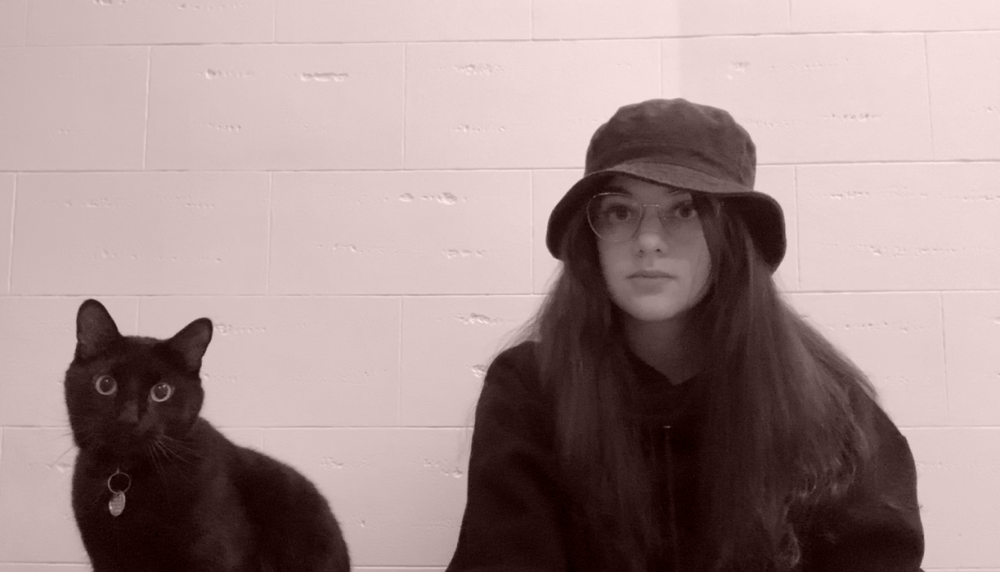

Hello! Je m’appelle Juliette, je me spécialise en design d’interface et j’adore créer des expériences.


spooky design pas lui
sad times :(

Les design UI/UX est ma grande force, par contre, je possède une affection pour la programmation, le montage vidéo et l'animation 2D.
Le JavaScript, la suite Adobe, Blender et Figma font aussi parties de mes habiletés.
Technique d’intégration multimédia
Je suis à la recherche d’un emploi dans une entreprise créative et innovante.